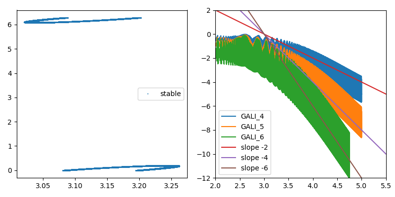
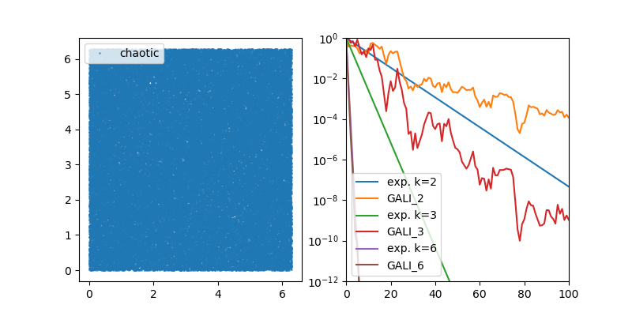
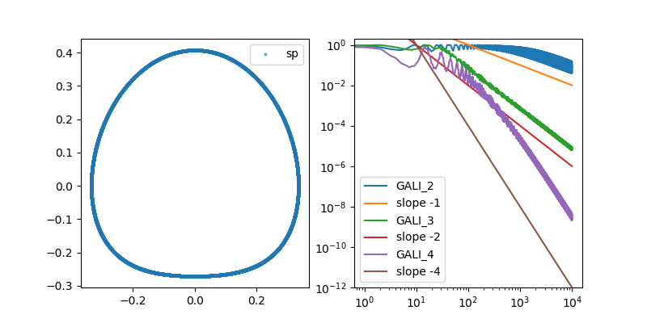
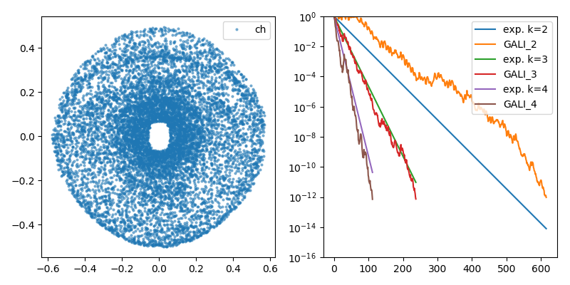
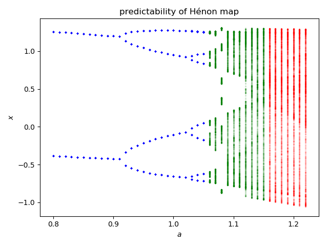

Chaos Detection
Being able to detect and distinguish chaotic from regular behavior is crucial in the study of dynamical systems. Most of the time a positive maximum lyapunov exponent and a bounded system indicate chaos.
However, the convergence of the Lyapunov exponent can be slow, or even misleading, as the types of chaotic behavior vary greatly with respect to their predictability. There are many alternatives, some more efficient and some more accurate in characterizing chaotic and regular motion. Some of these methods are included in DynamicalSystems.jl.
Performance depends on the solver
Notice that the performance of functions that use ContinuousDynamicalSystems depend crucially on the chosen solver. Please see the documentation page on Choosing a solver for an in-depth discussion.
Generalized Alignment Index
"GALI" for sort, is a method that relies on the fact that initially orthogonal deviation vectors tend to align towards the direction of the maximum Lyapunov exponent for chaotic motion. It is one of the most recent and cheapest methods for distinguishing chaotic and regular behavior, introduced first in 2007 by Skokos, Bountis & Antonopoulos.
#
ChaosTools.gali — Function.
gali(ds::DynamicalSystem, tmax, k::Int | Q0; kwargs...) -> GALI_k, t
Compute \text{GALI}_k [1] for a given k up to time tmax. Return \text{GALI}_k(t) and time vector t.
The third argument, which sets the order of gali, can be an integer k, or a matrix with its columns being the deviation vectors (then k = size(Q0)[2]). In the first case random orthonormal vectors are chosen.
Keyword Arguments
threshold = 1e-12: IfGALI_kfalls below thethresholditeration is terminated.dt = 1: Time-step between deviation vector normalizations. For continuous systems this is approximate.u0: Initial state for the system. Defaults toget_state(ds).diffeq...: Keyword arguments propagated intoinitof DifferentialEquations.jl. Seetrajectoryfor examples. Only valid for continuous systems.
Description
The Generalized Alignment Index, \text{GALI}_k, is an efficient (and very fast) indicator of chaotic or regular behavior type in D-dimensional Hamiltonian systems (D is number of variables). The asymptotic behavior of \text{GALI}_k(t) depends critically on the type of orbit resulting from the initial condition. If it is a chaotic orbit, then
with \lambda_j being the j-th Lyapunov exponent (see lyapunov, lyapunovs). If on the other hand the orbit is regular, corresponding to movement in d-dimensional torus with 1 \le d \le D/2 then it holds
Traditionally, if \text{GALI}_k(t) does not become less than the threshold until tmax the given orbit is said to be chaotic, otherwise it is regular.
Our implementation is not based on the original paper, but rather in the method described in [2], which uses the product of the singular values of A, a matrix that has as columns the deviation vectors.
Performance Notes
This function uses a tangent_integrator. For loops over initial conditions and/or parameter values one should use the low level method that accepts an integrator, and reinit! it to new initial conditions. See the "advanced documentation" for info on the integrator object. The low level method is
ChaosTools.gali(tinteg, tmax, dt, threshold)
References
[1] : Skokos, C. H. et al., Physica D 231, pp 30–54 (2007)
[2] : Skokos, C. H. et al., Chaos Detection and Predictability - Chapter 5 (section 5.3.1 and ref. [85] therein), Lecture Notes in Physics 915, Springer (2016)
Discrete Example
We will use 3 coupled standard maps as an example for a discrete system:
using DynamicalSystems using PyPlot M = 3; ks = 3ones(M); Γ = 0.1; stable = [π, π, π, 0.01, 0, 0] .+ 0.1 chaotic = rand(2M) ds = Systems.coupledstandardmaps(M, stable; ks=ks, Γ = Γ)
6-dimensional discrete dynamical system state: [3.24159, 3.24159, 3.24159, 0.11, 0.1, 0.1] e.o.m.: CoupledStandardMaps in-place? true jacobian: CoupledStandardMaps parameters: Tuple
First, let's see the behavior of GALI for a stable orbit
figure(figsize = (8,4)) tr = trajectory(ds, 100000) subplot(1,2,1) plot(tr[:,1], tr[:,1+M], alpha = 0.5, label="stable",marker="o", ms=1, linewidth=0) legend() subplot(1,2,2) for k in [4, 5, 6] g, t = gali(ds, 1e5, k; threshold=1e-12) lt = log10.(t); lg = log10.(g) plot(lt, lg, label="GALI_$(k)") end lt = 2:0.5:5.5 plot(lt, -2(lt .- 3), label="slope -2") plot(lt, -4(lt .- 3), label="slope -4") plot(lt, -6(lt .- 3), label="slope -6") xlim(2, 5.5) ylim(-12, 2) legend() tight_layout()

Now do the same for a chaotic orbit
figure(figsize = (8,4)) tr = trajectory(ds, 100000, chaotic) subplot(1,2,1) plot(tr[:,1], tr[:,1+M], alpha = 0.5, label="chaotic",marker="o", ms=1, linewidth=0) legend() subplot(1,2,2) ls = lyapunovs(ds, 100000; u0 = chaotic) for k in [2,3,6] ex = sum(ls[1] - ls[j] for j in 2:k) g, t = gali(ds, 1000, k; u0 = chaotic) semilogy(t, exp.(-ex.*t), label="exp. k=$k") semilogy(t, g, label="GALI_$(k)") end legend() xlim(0,100) ylim(1e-12, 1)

Continuous Example
As an example of a continuous system, let's see the henonheiles:
using DynamicalSystems using PyPlot, OrdinaryDiffEq sp = [0, .295456, .407308431, 0] # stable periodic orbit: 1D torus qp = [0, .483000, .278980390, 0] # quasiperiodic orbit: 2D torus ch = [0, -0.25, 0.42081, 0] # chaotic orbit ds = Systems.henonheiles(sp)
4-dimensional continuous dynamical system state: [0.0, 0.295456, 0.407308, 0.0] e.o.m.: hheom! in-place? true jacobian: hhjacob! parameters: nothing
First, we see the behavior with a stable periodic orbit
figure(figsize = (8,4)) subplot(1,2,1) dt = 1.0 diffeq = (abstol=1e-9, reltol=1e-9, alg = Tsit5(), maxiters = typemax(Int)) tr = trajectory(ds, 10000.0; dt=dt, diffeq...) plot(tr[:,1], tr[:,3], alpha = 0.5, label="sp",marker="o",markersize=2, linewidth=0) legend() subplot(1,2,2) for k in [2,3,4] g, t = gali(ds, 10000.0, k; dt = dt, diffeq...) loglog(t, g, label="GALI_$(k)") if k < 4 loglog(t, 100 ./ t.^(k-1), label="slope -$(k-1)") else loglog(t, 10000 ./ t.^(2k-4), label="slope -$(2k-4)") end end ylim(1e-12, 2) legend();

Next, let's see what happens with a quasi-periodic orbit. Don't forget to change the u0 arguments!
figure(figsize = (8,4)) subplot(1,2,1) tr = trajectory(ds, 10000.0, qp; dt=dt, diffeq...) plot(tr[:,1], tr[:,3], alpha = 0.5, label="qp",marker="o",markersize=2, linewidth=0) legend() subplot(1,2,2) for k in [2,3,4] g, t = gali(ds, 10000.0, k; u0 = qp, dt = dt, diffeq...) loglog(t, g, label="GALI_$(k)") if k == 2 loglog(t, 1 ./ t.^(2k-4), label="slope -$(2k-4)") else loglog(t, 100 ./ t.^(2k-4), label="slope -$(2k-4)") end end ylim(1e-12, 2) legend() tight_layout()

Finally, here is GALI of a continuous system with a chaotic orbit
figure(figsize = (8,4)) tr = trajectory(ds, 10000.0, ch; dt=dt, diffeq...) subplot(1,2,1) plot(tr[:,1], tr[:,3], alpha = 0.5, label="ch",marker="o",markersize=2, linewidth=0) legend() subplot(1,2,2) ls = lyapunovs(ds, 5000.0; dt=dt, u0 = ch, diffeq...) for k in [2,3,4] ex = sum(ls[1] - ls[j] for j in 2:k) g, t = gali(ds, 1000, k; u0 = ch, dt = dt, diffeq...) semilogy(t, exp.(-ex.*t), label="exp. k=$k") semilogy(t, g, label="GALI_$(k)") end legend() ylim(1e-16, 1) tight_layout()

As you can see, the results of both discrete and continuous systems match very well the theory described in gali.
Using GALI
No-one in their right mind would try to fit power-laws in order to distinguish between chaotic and regular behavior, like the above examples. These were just proofs that the method works as expected in all cases.
The most common usage of \text{GALI}_k is to define a (sufficiently) small amount of time and a (sufficiently) small threshold and see whether \text{GALI}_k stays below it, for a (sufficiently) big k.
The following is an example of advanced usage:
using DynamicalSystems, PyPlot function main(k) # Measure of chaoticity: final time of gali_2 dens = 201 chaoticity = zeros(Int, dens, dens) θs = ps = range(0, stop = 2π, length = dens+1) ds = Systems.standardmap(k = k) tinteg = tangent_integrator(ds, 2) for (i, θ) ∈ enumerate(θs[1:dens]) println("i = $(i)") for (j, p) ∈ enumerate(ps[1:dens]) # new initial state is the system initial state u0 = SVector{2}(θ, p) reinit!(tinteg, u0, orthonormal(2,2)) # Low-level call signature of gali: # gali(tinteg, tmax, dt, threshold) chaoticity[i, j] = gali(tinteg, 500, 1, 1e-12)[2][end] end end figure() pcolormesh(θs .- (θs[2] - θs[1])/2, ps .- (ps[2] - ps[1])/2, chaoticity') colorbar() xlabel("\$\\theta\$") ylabel("\$p\$") return end main(0.9);

Regular orbits in the Henon-Heiles system
In this example we use the poincaresos function to produce surfaces of section of the henonheiles system at different energies. At each energy gali is used to color-code each initial condition according to how chaotic/regular it is, i.e. how much time does it need to exceed the threshold of gali.
You can download the video using this link.
You can find the script that produced this animation in DynamicalSystems/docs/coolanimations/gali_psos_henonhelies.jl.
Predictability of a chaotic system
Even if a system is "formally" chaotic, it can still be in phases where it is very predictable, because the correlation coefficient between nearby trajectories vanishes very slowly with time. Wernecke, Sándor & Gros have developed an algorithm that allows one to classify a dynamical system to one of three categories: strongly chaotic, partially predictable chaos or regular (called laminar in their paper).
We have implemented their algorithm in the function predictability. Note that we set up the implementation to always return regular behavior for negative Lyapunov exponent. You may want to override this for research purposes.
#
ChaosTools.predictability — Function.
predictability(ds::DynamicalSystem; kwargs...) -> chaos_type, ν, C
Determine whether ds displays strongly chaotic, partially-predictable chaotic or regular behaviour, using the method by Wernecke et al. described in [1].
Return the type of the behavior, the cross-distance scaling coefficient ν and the correlation coefficient C. Typical values for ν, C and chaos_type are given in Table 2 of [1]:
chaos_type |
ν |
C |
|---|---|---|
:SC |
0 | 0 |
:PPC |
0 | 1 |
:REG |
1 | 1 |
Keyword Arguments
Ttr = 200: Extra "transient" time to evolve the system before sampling from the trajectory. Should beIntfor discrete systems.T_sample = 1e4: Time to evolve the system for taking samples. Should beIntfor discrete systems.n_samples = 500: Number of samples to take for use in calculating statistics.λ_max = lyapunov(ds, 5000): Value to use for largest Lyapunov exponent for finding the Lyapunov prediction time. If it is less than zero a regular result is returned immediatelly.d_tol = 1e-3: tolerance distance to use for calculating Lyapunov prediction time.T_multiplier = 10: Multiplier from the Lyapunov prediction time to the evaluation time.T_max = Inf: Maximum time at which to evaluate trajectory distance. If the internally computed evaluation time is larger thanT_max, stop atT_maxinstead.δ_range = 10.0 .^ (-9:-6): Range of initial condition perturbation distances to use to determine scalingν.diffeq...: Keyword arguments propagated intoinitof DifferentialEquations.jl. Seetrajectoryfor examples. Only valid for continuous systems.
Description
Samples points from a trajectory of the system to be used as initial conditions. Each of these initial conditions is randomly perturbed by a distance δ, and the trajectories for both the original and perturbed initial conditions are computed to the 'evaluation time' T.
The average (over the samples) distance and cross-correlation coefficient of the state at time T is computed. This is repeated for a range of δ (defined by δ_range), and linear regression is used to determine how the distance and cross-correlation scale with δ, allowing for identification of chaos type.
The evaluation time T is calculated as T = T_multiplier*Tλ, where the Lyapunov prediction time Tλ = log(d_tol/δ)/λ_max. This may be very large if the λ_max is small, e.g. when the system is regular, so this internally computed time T can be overridden by a smaller T_max set by the user.
Performance Notes
For continuous systems, it is likely that the maxiters used by the integrators needs to be increased, e.g. to 1e9. This is part of the diffeq kwargs. In addition, be aware that this function does a lot of internal computations. It is operating in a different speed than e.g. lyapunov.
References
[1] : Wernecke, H., Sándor, B. & Gros, C. How to test for partially predictable chaos. Scientific Reports 7, (2017).
Example Hénon Map
We will create something similar to figure 2 of the paper, but for the Hénon map.
figure() he = Systems.henon() as = 0.8:0.01:1.225 od = orbitdiagram(he, 1, 1, as; n = 2000, Ttr = 2000) colors = Dict(:REG => "b", :PPC => "g", :SC => "r") for (i, a) in enumerate(as) set_parameter!(he, 1, a) chaos_type, ν, C = predictability(he; T_max = 400000, Ttr = 2000) scatter(a .* ones(length(od[i])), od[i], c = colors[chaos_type], s = 2, alpha = 0.05) end xlabel("\$a\$"); ylabel("\$x\$") title("predictability of Hénon map"); tight_layout()
